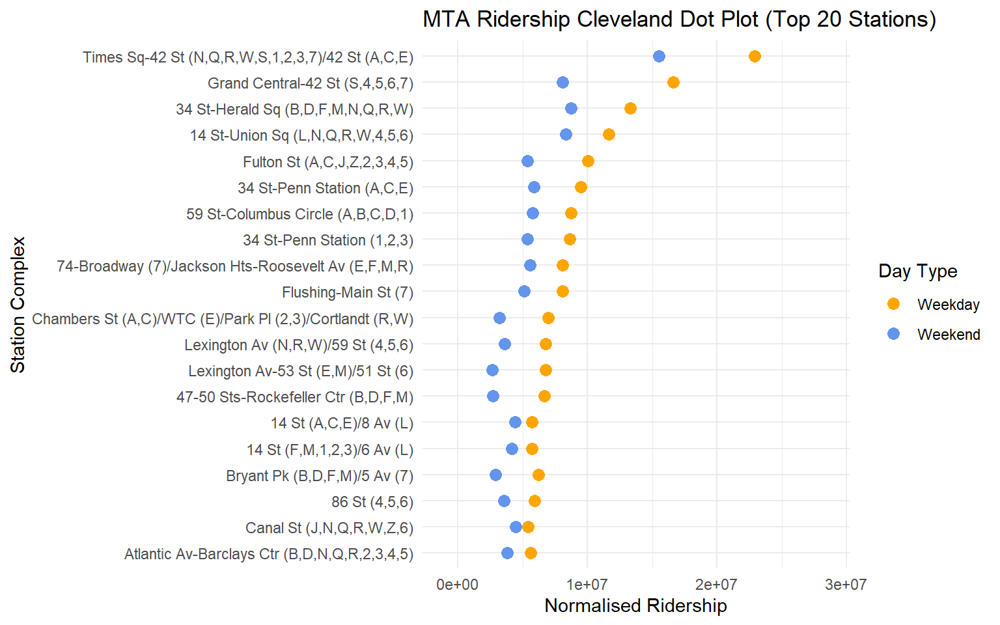

Code
mta_service_alerts_filtered <-
mta_service_alerts |>
filter(Agency == "NYCT Subway") |>
mutate(Date = as.Date(as.POSIXlt(Date, format="%m/%d/%Y %I:%M:%S %p", tz="America/New_York")))mta_service_alerts_filtered <-
mta_service_alerts |>
filter(Agency == "NYCT Subway") |>
mutate(Date = as.Date(as.POSIXlt(Date, format="%m/%d/%Y %I:%M:%S %p", tz="America/New_York")))# Remove the first column from the ridership dataset
mta_ridership_new <-
mta_ridership |>
select(station_complex, year, month, day_type, ridership)# Define a mapping of subway lines to their respective groups
subway_groups <- data.frame(
line = c("1", "2", "3", "4", "5", "6", "7", "A", "C", "E", "B", "D", "F", "M", "G", "J", "Z", "JZ", "L", "N", "Q", "R", "W", "S 42nd", "S Fkln", "S Rock"),
group = c(
"IRT - Broadway–Seventh Avenue Line", # 1, 2, 3
"IRT - Broadway–Seventh Avenue Line",
"IRT - Broadway–Seventh Avenue Line",
"IRT - Lexington Avenue Line", # 4, 5, 6
"IRT - Lexington Avenue Line",
"IRT - Lexington Avenue Line",
"IRT - Flushing Line", # 7
"IND - Eighth Avenue Line", # A, C, E
"IND - Eighth Avenue Line",
"IND - Eighth Avenue Line",
"IND - Sixth Avenue Line", # B, D, F, M
"IND - Sixth Avenue Line",
"IND - Sixth Avenue Line",
"IND - Sixth Avenue Line",
"IND - Crosstown Line", # G
"BMT - Nassau Street Line", # J, Z
"BMT - Nassau Street Line",
"BMT - Nassau Street Line",
"BMT - Canarsie Line", # L
"BMT - Broadway Line", # N, Q, R, W
"BMT - Broadway Line",
"BMT - Broadway Line",
"BMT - Broadway Line",
"Shuttles", # All S lines
"Shuttles",
"Shuttles"
)
)subway_wait_assessment_with_groups <- subway_wait_assessment |>
left_join(subway_groups, by = "line")# Define custom colors for the subway groups (based on NYC Subway colors)
subway_group_colors <- c(
"IRT - Broadway–Seventh Avenue Line" = "#EE352E",# Red
"IRT - Lexington Avenue Line" = "#00933C", # Green
"IRT - Flushing Line" = "#B933AD", # Purple
"IND - Eighth Avenue Line" = "#0039A6", # Blue
"IND - Sixth Avenue Line" = "#FF6319", # Orange
"IND - Crosstown Line" = "#6CBE45", # Light Green
"BMT - Nassau Street Line" = "#996633", # Brown
"BMT - Canarsie Line" = "#A7A9AC", # Gray
"BMT - Broadway Line" = "#FCCC0A", # Yellow
"Shuttles" = "#808183" # Dark Slate Gray
)# Define custom legend labels, showing group name and corresponding lines
custom_legend_labels <- c(
"IRT - Broadway–Seventh Avenue Line" = "1, 2, 3",
"IRT - Lexington Avenue Line" = "4, 5, 6",
"IRT - Flushing Line" = "Flushing (7)",
"IND - Eighth Avenue Line" = "A, C, E",
"IND - Sixth Avenue Line" = "B, D, F, M",
"IND - Crosstown Line" = "Crosstown (G)",
"BMT - Nassau Street Line" = "J, Z",
"BMT - Canarsie Line" = "L",
"BMT - Broadway Line" = "N, Q, R, W",
"Shuttles" = "S lines"
)# Recompute the timepoint counts over each group
wait_assessment_groupwise <- subway_wait_assessment_with_groups |>
group_by(group, month) |>
summarize(tp_passed = sum(num_timepoints_passing_wait_assessment, na.rm = TRUE),
tp_sched = sum(num_sched_timepoints, na.rm = TRUE),
.groups = "drop") |>
mutate(`wait assessment` = (1 - tp_passed/tp_sched)*100) |>
ungroup() |>
drop_na(group)ggplot(wait_assessment_groupwise, aes(x = month, y = `wait assessment`, color = group, group = group)) +
geom_line(size = 1) +
scale_x_date(limits = c(as.Date("2020-01-01"), as.Date("2024-10-01")),
date_breaks = "2 months", date_labels = "%b %Y") +
scale_color_manual(values = subway_group_colors, labels = custom_legend_labels) +
labs(
title = "Monthly Wait Assessment by Subway Group",
x = "Month",
y = "% timepoints with delays",
color = "Subway Group (Lines)"
) +
theme(
text = element_text(size = 14),
legend.position = "right",
legend.title = element_text(face = "bold"),
axis.text.x = element_text(angle = 45, hjust = 1)
)Warning: Using `size` aesthetic for lines was deprecated in ggplot2 3.4.0.
ℹ Please use `linewidth` instead.
# Filter to include data after July 2020 only
subway_train_delays_filtered <-
subway_train_delays |>
filter(month >= '2020-07-01')
mta_service_alerts_filtered_v2 <-
mta_service_alerts_filtered |>
filter(Date >= '2020-07-01')
subway_wait_assessment_filtered <-
subway_wait_assessment |>
filter(month >= '2020-07-01')monthly_delays <- subway_train_delays_filtered |>
group_by(month, day_type) |>
summarize(delays = sum(delays)) |>
ungroup()`summarise()` has grouped output by 'month'. You can override using the
`.groups` argument.monthly_wait_assessment <- subway_wait_assessment_filtered |>
group_by(month, day_type) |>
summarize(tp_passed = sum(num_timepoints_passing_wait_assessment, na.rm = TRUE),
tp_sched = sum(num_sched_timepoints, na.rm = TRUE)) |>
mutate(`wait assessment` = tp_passed/tp_sched) |>
ungroup()`summarise()` has grouped output by 'month'. You can override using the
`.groups` argument.monthly_service_alerts <- mta_service_alerts_filtered_v2 |>
mutate(month = make_date(year(Date), month(Date), 1),
day_type = ifelse(wday(Date) %in% c(1, 7), 2, 1)) |>
group_by(month, day_type) |>
summarize(alert_count = n()) |>
ungroup()`summarise()` has grouped output by 'month'. You can override using the
`.groups` argument.monthly_mta_ridership <- mta_ridership_new |>
mutate(month = make_date(year, month, 1)) |>
group_by(month, day_type) |>
summarize(ridership = sum(ridership)) |>
ungroup()`summarise()` has grouped output by 'month'. You can override using the
`.groups` argument.df_list <- list(monthly_delays, monthly_service_alerts, monthly_wait_assessment, monthly_mta_ridership)
joined_df <- df_list |>
reduce(full_join, by=c('month', 'day_type'))joined_df |>
filter(day_type == 1) |>
mutate(index_delays = round(100*delays/delays[1], 2),
index_alert_count = round(100*alert_count/alert_count[1], 2),
index_wait_assmt = round(100*`wait assessment`/`wait assessment`[1], 2),
index_ridership = round(100*ridership/ridership[1], 2)) |>
select(month, index_delays, index_alert_count, index_wait_assmt, index_ridership) |>
pivot_longer(!month, names_to = "parameter", values_to = "index") |>
ggplot(aes(x = month, y = index, color = parameter)) +
geom_line(size = 1, aes(group = parameter)) +
scale_x_date(limits = c(as.Date("2020-07-01"), as.Date("2024-10-01")),
date_breaks = "2 months", date_labels = "%b %Y") +
scale_color_brewer(palette = "Set1") +
labs(title = "MTA monthly parameter variation on weekdays", color = "Parameter") +
theme(axis.text.x = element_text(angle = 45, hjust = 1))
joined_df |>
filter(day_type == 2) |>
mutate(index_delays = round(100*delays/delays[1], 2),
index_alert_count = round(100*alert_count/alert_count[1], 2),
index_wait_assmt = round(100*`wait assessment`/`wait assessment`[1], 2),
index_ridership = round(100*ridership/ridership[1], 2)) |>
select(month, index_delays, index_alert_count, index_wait_assmt, index_ridership) |>
pivot_longer(!month, names_to = "parameter", values_to = "index") |>
ggplot(aes(x = month, y = index, color = parameter)) +
scale_x_date(limits = c(as.Date("2020-07-01"), as.Date("2024-10-01")),
date_breaks = "2 months", date_labels = "%b %Y") +
geom_line(size = 1, aes(group = parameter)) +
scale_color_brewer(palette = "Set1") +
labs(title = "MTA monthly parameter variation on weekends", color = "Parameter") +
theme(axis.text.x = element_text(angle = 45, hjust = 1))
Factor out the pandemic effect:
joined_df_post_pandemic <- joined_df |>
filter(month >= "2022-07-01")joined_df_post_pandemic |>
filter(day_type == 1) |>
mutate(index_delays = round(100*delays/delays[1], 2),
index_alert_count = round(100*alert_count/alert_count[1], 2),
index_wait_assmt = round(100*`wait assessment`/`wait assessment`[1], 2),
index_ridership = round(100*ridership/ridership[1], 2)) |>
select(month, index_delays, index_alert_count, index_wait_assmt, index_ridership) |>
pivot_longer(!month, names_to = "parameter", values_to = "index") |>
ggplot(aes(x = month, y = index, color = parameter)) +
geom_line(size = 1, aes(group = parameter)) +
scale_x_date(limits = c(as.Date("2022-07-01"), as.Date("2024-10-01")),
date_breaks = "2 months", date_labels = "%b %Y") +
scale_color_brewer(palette = "Set1") +
labs(title = "MTA monthly parameter variation on weekdays (post pandemic)", color = "Parameter") +
theme(axis.text.x = element_text(angle = 45, hjust = 1))
Scatterplots:
joined_data_modified <- joined_df |>
mutate(period = factor(ifelse(month >= "2022-07-01", "Post-Pandemic", "Pandemic")))joined_data_modified |>
filter(day_type == 1) |>
ggplot(aes(x = delays/10000, y = ridership/1000000, color = period)) +
geom_point() +
labs(
x = "Monthly Delays (in ten thousands)",
y = "Monthly Ridership (in millions)",
color = "Period",
title = "Ridership vs Delays - Weekdays Only"
)
joined_data_modified |>
filter(day_type == 2) |>
ggplot(aes(x = delays/10000, y = ridership/1000000, color = period)) +
geom_point() +
labs(
x = "Monthly Delays (in ten thousands)",
y = "Monthly Ridership (in millions)",
color = "Period",
title = "Ridership vs Delays - Weekends Only"
)
analysis_month <- as.Date("2023-01-01")
# Choose a number of stations with maximum ridership for plotting
stations_2 <- unique(top_n(mta_ridership_new, 1000, ridership)$station_complex)
scale_val <- 100000
mta_ridership_new |>
mutate(month = make_date(year, month, 1)) |>
filter(month == analysis_month) |>
mutate(day_type = fct_recode(factor(day_type), Weekday = "1", Weekend = "2")) |>
mutate(ridership = ifelse(day_type == "Weekday", ridership/(5*scale_val), ridership/(2*scale_val))) |>
filter(station_complex %in% stations_2) |>
ggplot(aes(x = ridership, y = fct_reorder2(factor(station_complex), day_type == "Weekday", ridership, .desc = FALSE), color = day_type)) +
geom_point() +
labs(
x = "Normalized Ridership (in hundred thousands)",
y = "",
color = "Day Type",
title = paste("Ridership in", analysis_month |> format(format="%b %Y"))
)
theme_linedraw(base_size = 7)List of 136
$ line :List of 6
..$ colour : chr "black"
..$ linewidth : num 0.318
..$ linetype : num 1
..$ lineend : chr "butt"
..$ arrow : logi FALSE
..$ inherit.blank: logi TRUE
..- attr(*, "class")= chr [1:2] "element_line" "element"
$ rect :List of 5
..$ fill : chr "white"
..$ colour : chr "black"
..$ linewidth : num 0.318
..$ linetype : num 1
..$ inherit.blank: logi TRUE
..- attr(*, "class")= chr [1:2] "element_rect" "element"
$ text :List of 11
..$ family : chr ""
..$ face : chr "plain"
..$ colour : chr "black"
..$ size : num 7
..$ hjust : num 0.5
..$ vjust : num 0.5
..$ angle : num 0
..$ lineheight : num 0.9
..$ margin : 'margin' num [1:4] 0points 0points 0points 0points
.. ..- attr(*, "unit")= int 8
..$ debug : logi FALSE
..$ inherit.blank: logi TRUE
..- attr(*, "class")= chr [1:2] "element_text" "element"
$ title : NULL
$ aspect.ratio : NULL
$ axis.title : NULL
$ axis.title.x :List of 11
..$ family : NULL
..$ face : NULL
..$ colour : NULL
..$ size : NULL
..$ hjust : NULL
..$ vjust : num 1
..$ angle : NULL
..$ lineheight : NULL
..$ margin : 'margin' num [1:4] 1.75points 0points 0points 0points
.. ..- attr(*, "unit")= int 8
..$ debug : NULL
..$ inherit.blank: logi TRUE
..- attr(*, "class")= chr [1:2] "element_text" "element"
$ axis.title.x.top :List of 11
..$ family : NULL
..$ face : NULL
..$ colour : NULL
..$ size : NULL
..$ hjust : NULL
..$ vjust : num 0
..$ angle : NULL
..$ lineheight : NULL
..$ margin : 'margin' num [1:4] 0points 0points 1.75points 0points
.. ..- attr(*, "unit")= int 8
..$ debug : NULL
..$ inherit.blank: logi TRUE
..- attr(*, "class")= chr [1:2] "element_text" "element"
$ axis.title.x.bottom : NULL
$ axis.title.y :List of 11
..$ family : NULL
..$ face : NULL
..$ colour : NULL
..$ size : NULL
..$ hjust : NULL
..$ vjust : num 1
..$ angle : num 90
..$ lineheight : NULL
..$ margin : 'margin' num [1:4] 0points 1.75points 0points 0points
.. ..- attr(*, "unit")= int 8
..$ debug : NULL
..$ inherit.blank: logi TRUE
..- attr(*, "class")= chr [1:2] "element_text" "element"
$ axis.title.y.left : NULL
$ axis.title.y.right :List of 11
..$ family : NULL
..$ face : NULL
..$ colour : NULL
..$ size : NULL
..$ hjust : NULL
..$ vjust : num 1
..$ angle : num -90
..$ lineheight : NULL
..$ margin : 'margin' num [1:4] 0points 0points 0points 1.75points
.. ..- attr(*, "unit")= int 8
..$ debug : NULL
..$ inherit.blank: logi TRUE
..- attr(*, "class")= chr [1:2] "element_text" "element"
$ axis.text :List of 11
..$ family : NULL
..$ face : NULL
..$ colour : chr "black"
..$ size : 'rel' num 0.8
..$ hjust : NULL
..$ vjust : NULL
..$ angle : NULL
..$ lineheight : NULL
..$ margin : NULL
..$ debug : NULL
..$ inherit.blank: logi TRUE
..- attr(*, "class")= chr [1:2] "element_text" "element"
$ axis.text.x :List of 11
..$ family : NULL
..$ face : NULL
..$ colour : NULL
..$ size : NULL
..$ hjust : NULL
..$ vjust : num 1
..$ angle : NULL
..$ lineheight : NULL
..$ margin : 'margin' num [1:4] 1.4points 0points 0points 0points
.. ..- attr(*, "unit")= int 8
..$ debug : NULL
..$ inherit.blank: logi TRUE
..- attr(*, "class")= chr [1:2] "element_text" "element"
$ axis.text.x.top :List of 11
..$ family : NULL
..$ face : NULL
..$ colour : NULL
..$ size : NULL
..$ hjust : NULL
..$ vjust : num 0
..$ angle : NULL
..$ lineheight : NULL
..$ margin : 'margin' num [1:4] 0points 0points 1.4points 0points
.. ..- attr(*, "unit")= int 8
..$ debug : NULL
..$ inherit.blank: logi TRUE
..- attr(*, "class")= chr [1:2] "element_text" "element"
$ axis.text.x.bottom : NULL
$ axis.text.y :List of 11
..$ family : NULL
..$ face : NULL
..$ colour : NULL
..$ size : NULL
..$ hjust : num 1
..$ vjust : NULL
..$ angle : NULL
..$ lineheight : NULL
..$ margin : 'margin' num [1:4] 0points 1.4points 0points 0points
.. ..- attr(*, "unit")= int 8
..$ debug : NULL
..$ inherit.blank: logi TRUE
..- attr(*, "class")= chr [1:2] "element_text" "element"
$ axis.text.y.left : NULL
$ axis.text.y.right :List of 11
..$ family : NULL
..$ face : NULL
..$ colour : NULL
..$ size : NULL
..$ hjust : num 0
..$ vjust : NULL
..$ angle : NULL
..$ lineheight : NULL
..$ margin : 'margin' num [1:4] 0points 0points 0points 1.4points
.. ..- attr(*, "unit")= int 8
..$ debug : NULL
..$ inherit.blank: logi TRUE
..- attr(*, "class")= chr [1:2] "element_text" "element"
$ axis.text.theta : NULL
$ axis.text.r :List of 11
..$ family : NULL
..$ face : NULL
..$ colour : NULL
..$ size : NULL
..$ hjust : num 0.5
..$ vjust : NULL
..$ angle : NULL
..$ lineheight : NULL
..$ margin : 'margin' num [1:4] 0points 1.4points 0points 1.4points
.. ..- attr(*, "unit")= int 8
..$ debug : NULL
..$ inherit.blank: logi TRUE
..- attr(*, "class")= chr [1:2] "element_text" "element"
$ axis.ticks :List of 6
..$ colour : chr "black"
..$ linewidth : 'rel' num 0.5
..$ linetype : NULL
..$ lineend : NULL
..$ arrow : logi FALSE
..$ inherit.blank: logi TRUE
..- attr(*, "class")= chr [1:2] "element_line" "element"
$ axis.ticks.x : NULL
$ axis.ticks.x.top : NULL
$ axis.ticks.x.bottom : NULL
$ axis.ticks.y : NULL
$ axis.ticks.y.left : NULL
$ axis.ticks.y.right : NULL
$ axis.ticks.theta : NULL
$ axis.ticks.r : NULL
$ axis.minor.ticks.x.top : NULL
$ axis.minor.ticks.x.bottom : NULL
$ axis.minor.ticks.y.left : NULL
$ axis.minor.ticks.y.right : NULL
$ axis.minor.ticks.theta : NULL
$ axis.minor.ticks.r : NULL
$ axis.ticks.length : 'simpleUnit' num 1.75points
..- attr(*, "unit")= int 8
$ axis.ticks.length.x : NULL
$ axis.ticks.length.x.top : NULL
$ axis.ticks.length.x.bottom : NULL
$ axis.ticks.length.y : NULL
$ axis.ticks.length.y.left : NULL
$ axis.ticks.length.y.right : NULL
$ axis.ticks.length.theta : NULL
$ axis.ticks.length.r : NULL
$ axis.minor.ticks.length : 'rel' num 0.75
$ axis.minor.ticks.length.x : NULL
$ axis.minor.ticks.length.x.top : NULL
$ axis.minor.ticks.length.x.bottom: NULL
$ axis.minor.ticks.length.y : NULL
$ axis.minor.ticks.length.y.left : NULL
$ axis.minor.ticks.length.y.right : NULL
$ axis.minor.ticks.length.theta : NULL
$ axis.minor.ticks.length.r : NULL
$ axis.line : list()
..- attr(*, "class")= chr [1:2] "element_blank" "element"
$ axis.line.x : NULL
$ axis.line.x.top : NULL
$ axis.line.x.bottom : NULL
$ axis.line.y : NULL
$ axis.line.y.left : NULL
$ axis.line.y.right : NULL
$ axis.line.theta : NULL
$ axis.line.r : NULL
$ legend.background :List of 5
..$ fill : NULL
..$ colour : logi NA
..$ linewidth : NULL
..$ linetype : NULL
..$ inherit.blank: logi TRUE
..- attr(*, "class")= chr [1:2] "element_rect" "element"
$ legend.margin : 'margin' num [1:4] 3.5points 3.5points 3.5points 3.5points
..- attr(*, "unit")= int 8
$ legend.spacing : 'simpleUnit' num 7points
..- attr(*, "unit")= int 8
$ legend.spacing.x : NULL
$ legend.spacing.y : NULL
$ legend.key : NULL
$ legend.key.size : 'simpleUnit' num 1.2lines
..- attr(*, "unit")= int 3
$ legend.key.height : NULL
$ legend.key.width : NULL
$ legend.key.spacing : 'simpleUnit' num 3.5points
..- attr(*, "unit")= int 8
$ legend.key.spacing.x : NULL
$ legend.key.spacing.y : NULL
$ legend.frame : NULL
$ legend.ticks : NULL
$ legend.ticks.length : 'rel' num 0.2
$ legend.axis.line : NULL
$ legend.text :List of 11
..$ family : NULL
..$ face : NULL
..$ colour : NULL
..$ size : 'rel' num 0.8
..$ hjust : NULL
..$ vjust : NULL
..$ angle : NULL
..$ lineheight : NULL
..$ margin : NULL
..$ debug : NULL
..$ inherit.blank: logi TRUE
..- attr(*, "class")= chr [1:2] "element_text" "element"
$ legend.text.position : NULL
$ legend.title :List of 11
..$ family : NULL
..$ face : NULL
..$ colour : NULL
..$ size : NULL
..$ hjust : num 0
..$ vjust : NULL
..$ angle : NULL
..$ lineheight : NULL
..$ margin : NULL
..$ debug : NULL
..$ inherit.blank: logi TRUE
..- attr(*, "class")= chr [1:2] "element_text" "element"
$ legend.title.position : NULL
$ legend.position : chr "right"
$ legend.position.inside : NULL
$ legend.direction : NULL
$ legend.byrow : NULL
$ legend.justification : chr "center"
$ legend.justification.top : NULL
$ legend.justification.bottom : NULL
$ legend.justification.left : NULL
$ legend.justification.right : NULL
$ legend.justification.inside : NULL
$ legend.location : NULL
$ legend.box : NULL
$ legend.box.just : NULL
$ legend.box.margin : 'margin' num [1:4] 0cm 0cm 0cm 0cm
..- attr(*, "unit")= int 1
$ legend.box.background : list()
..- attr(*, "class")= chr [1:2] "element_blank" "element"
$ legend.box.spacing : 'simpleUnit' num 7points
..- attr(*, "unit")= int 8
[list output truncated]
- attr(*, "class")= chr [1:2] "theme" "gg"
- attr(*, "complete")= logi TRUE
- attr(*, "validate")= logi TRUE# Choose a number of stations with maximum ridership for plotting
stations <- unique(top_n(mta_ridership_new, 150, ridership)$station_complex)
mta_stationwise_ridership_wd <- mta_ridership_new |>
mutate(month = make_date(year, month, 1)) |>
filter(day_type == 1, station_complex %in% stations)
scale_val_2 <- 1000000
mta_stationwise_ridership_wd |>
ggplot(aes(x = month, y = ridership/scale_val_2, color = station_complex)) +
geom_line(size = 1) +
scale_x_date(limits = c(as.Date("2020-07-01"), as.Date("2024-10-01")),
date_breaks = "2 months", date_labels = "%b %Y") +
scale_color_brewer(palette = "Set2") +
labs(
x = "Month",
y = "Ridership (in millions)",
color = "Station"
) +
theme(axis.text.x = element_text(angle = 45, hjust = 1))
mta_stationwise_ridership_we <- mta_ridership_new |>
mutate(month = make_date(year, month, 1)) |>
filter(day_type == 2, station_complex %in% stations)
mta_stationwise_ridership_we |>
ggplot(aes(x = month, y = ridership/scale_val_2, color = station_complex)) +
geom_line(size = 1) +
scale_x_date(limits = c(as.Date("2020-07-01"), as.Date("2024-10-01")),
date_breaks = "2 months", date_labels = "%b %Y") +
scale_color_brewer(palette = "Set2") +
labs(
x = "Month",
y = "Ridership (in millions)",
color = "Station"
) +
theme(axis.text.x = element_text(angle = 45, hjust = 1))
# Save files for interactivity
# write_csv(mta_stationwise_ridership_wd, "data/MTA_Stationwise_Monthly_Ridership_Weekday.csv")
# write_csv(mta_stationwise_ridership_we, "data/MTA_Stationwise_Monthly_Ridership_Weekend.csv")